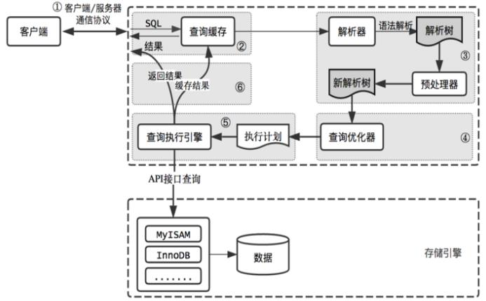
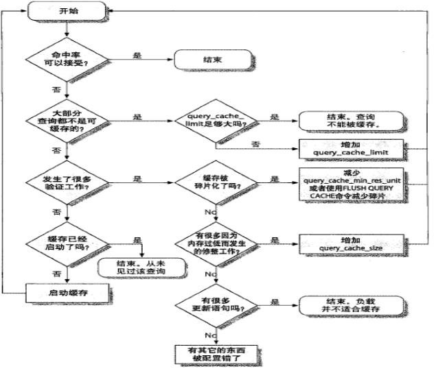
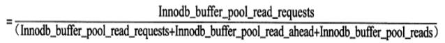
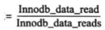

mysql架构
查询执行路径

查询缓存（ Query Cache ）原理
缓存SELECT操作或预处理查询的结果集和SQL语句，当有新的SELECT语句或预处理查询语句请求，先去查询缓存，判断是否存在可用的记录集，判断标准：与缓存的SQL语句，是否完全一样，区分大小写
优缺点:
不需要对SQL语句做任何解析和执行，当然语法解析必须通过在先，直接从 Query Cache中获得查询结果，提高查询性能
查询缓存的判断规则，不够智能，也即提高了查询缓存的使用门槛，降低其效率；
查询缓存的使用，会增加检查和清理Query Cache中记录集的开销
哪些查询可能不会被缓存
查询语句中加了SQL_NO_CACHE参数
查询语句中含有获得值的函数，包含自定义函数，
如：NOW()、CURDATE()、GET_LOCK()、RAND()、CONVERT_TZ()等
对系统数据库的查询：mysql、information_schema 查询语句中使用SESSION级别变量或存储过程中的局部变量
查询语句中使用了LOCK IN SHARE MODE、FOR UPDATE的语句，查询语句中类似SELECT …INTO导出数据的语句
对临时表的查询操作；存在警告信息的查询语句；不涉及任何表或视图的查询语句；某用户只有列级别权限的查询语句
事务隔离级别为Serializable时，所有查询语句都不能缓存
查询缓存相关的服务器变量
query_cache_min_res_unit：查询缓存中内存块的最小分配单位，默认4k，较小值会减少浪费，但会导致更频繁的内存分配操作，较大值会带来浪费，会导致碎片过多，内存不足
query_cache_limit：单个查询结果能缓存的最大值，默认为1M，对于查询结果过大而无法缓存的语句，建议使用SQL_NO_CACHE
query_cache_size：查询缓存总共可用的内存空间；单位字节，必须是1024的整数倍，最小值40KB，低于此值有警报
query_cache_wlock_invalidate：如果某表被其它的会话锁定，是否仍然可以从查询缓存中返回结果，默认值为OFF，表示可以在表被其它会话锁定的场景中继续从缓存返回数据；ON则表示不允许
query_cache_type：是否开启缓存功能，取值为ON, OFF, DEMAND
SELECT语句的缓存控制
SQL_CACHE：显式指定存储查询结果于缓存之中
SQL_NO_CACHE：显式查询结果不予缓存 query_cache_type参数变量
query_cache_type的值为OFF或0时，查询缓存功能关闭
query_cache_type的值为ON或1时，查询缓存功能打开，SELECT的结果符合缓存条件即会缓存，否则，不予缓存，显式指定SQL_NO_CACHE，不予缓存，此为默认值
query_cache_type的值为DEMAND或2时，查询缓存功能按需进行，显式指定SQL_CACHE的SELECT语句才会缓存；其它均不予缓存
[参看]<https://mariadb.com/kb/en/library/server-system-variables/#query_cache_type https://dev.mysql.com/doc/refman/5.7/en/query-cache-configuration.html>
优化查询缓存

查询缓存相关的状态变量：SHOW GLOBAL STATUS LIKE ‘Qcache%';
Qcache_free_blocks：处于空闲状态Query Cache中内存Block数
Qcache_total_blocks：Query Cache中总Block，当Qcache_free_blocks相对此值较大时，可能用内存碎片，执行FLUSH QUERY CACHE清理碎片
Qcache_free_memory：处于空闲状态的 Query Cache内存总量
Qcache_hits：Query Cache 命中次数
Qcache_inserts：向QueryCache中插入新的 Query Cache的次数，即没有命中的次数
Qcache_lowmem_prunes：记录因为内存不足而被移除出查询缓存的查询数
Qcache_not_cached：没有被Cache的SQL数，包括无法被Cache的SQL以及由于query_cache_type设置的不会被Cache的SQL语句
Qcache_queries_in_cache：在 Query Cache中的SQL数量
命中率和内存使用率估算
查询缓存中内存块的最小分配单位query_cache_min_res_unit：(query_cache_size - Qcache_free_memory) / Qcache_queries_in_cache
查询缓存命中率 ：Qcache_hits / ( Qcache_hits + Qcache_inserts ) * 100%
查询缓存内存使用率：(query_cache_size – qcache_free_memory) /query_cache_size * 100%
InnoDB存储引擎的缓冲池:
通常InnoDB存储引擎缓冲池的命中不应该小于99%
查看相关状态变量：
show global status like 'innodb%read%'\G
Innodb_buffer_pool_reads: 表示从物理磁盘读取页的次数
Innodb_buffer_pool_read_ahead: 预读的次数
Innodb_buffer_pool_read_ahead_evicted:预读页，但是没有读取就从缓冲池中被替换的页数量，一般用来判断预读的效率
Innodb_buffer_pool_read_requests: 从缓冲池中读取页次数
Innodb_data_read: 总共读入的字节数
Innodb_data_reads: 发起读取请求的次数，每次读取可能需要读取多个页
Innodb缓冲池命中率计算：

平均每次读取的字节数
